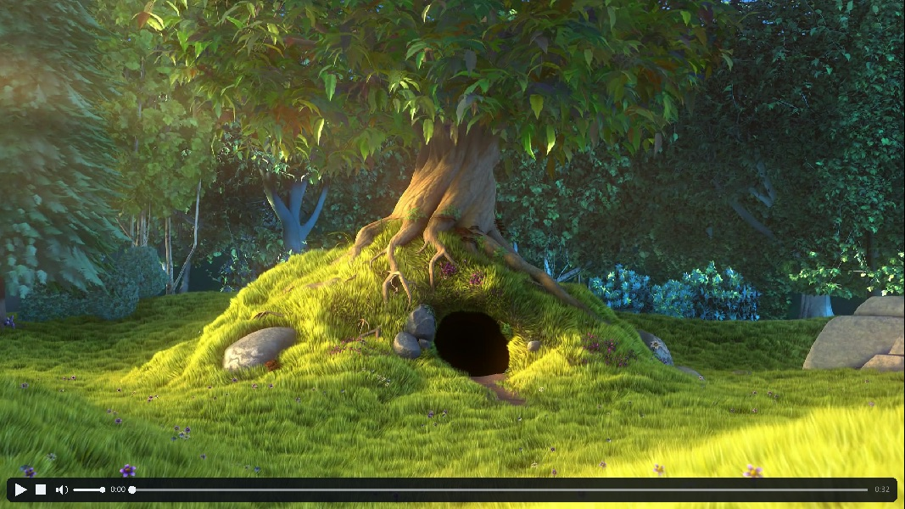

The .sld format
Write an .sld file.
An .sld file is plain text. Studio reads and writes the same format.
Use the slide coordinate system
Rayslides renders each slide at 1920 × 1080. Use these coordinates for every display size.
The x and y values set the top-left corner. The w and h values set the size.
@slide
@bg color=#07111fff
@box x=120 y=160 w=1680 h=140 fontsize=72 text=A clear titleSet deck defaults
Put shared font and color values before the first slide.
@font=./assets/Calibri Regular.ttf
@font_bold=./assets/Calibri Bold.TTF
@font_italic=./assets/Calibri Italic.ttf
@font_bold_italic=./assets/Calibri Bold Italic.ttf
@fontsize=36
@color=#edf5fbff
@bullet_color=#61dafbff
@line_height=1.15A local value overrides the deck default for that item.
Add text and shapes
Use @box for text, a panel, or both.
@box x=120 y=160 w=1680 h=120 fontsize=72 text=Source stays readable
@box x=120 y=330 w=640 h=260 bg=#10253aff color=#dbe8f5ff
This body can continue on later lines.
- A bullet starts with a dash.
- Four spaces create a nested bullet.Put text= last when the text stays on the directive line.
Use @bg for the full slide. Use bg= for one item.
Format text inside a box
| Source | Result |
|---|---|
**Bold** | Bold text |
_Italic_ | Italic text |
_**Both**_ | Bold italic text |
~~Underline~~ | Underlined text |
`Code` | Text in the extra font |
<#ffb547ff>Amber</> | Amber text |
Rayslides also provides monochrome fallbacks for common arrows, marks, and symbols.
Add a text shadow
Set the shadow color and offset on the text item.
@box x=120 y=120 w=1680 h=160 fontsize=84
shadow=#000000a0 shadow_x=3 shadow_y=5 text=A crisp shadowUse shadow_offset=4 when both offsets match. Use shadow=none to remove an inherited shadow.
Align, round, connect, and rotate
# Align text inside an explicit box.
@box x=120 y=140 w=900 h=180 align=center valign=middle text=Centered
# A rounded color shape, rotated clockwise around its center.
@box x=140 y=380 w=620 h=300 radius=36 rotation=-8 color=#245f78ff
# A source-native connector with an arrow at its end.
@line x=820 y=400 w=620 h=220 stroke_width=8 direction=down arrow=end color=#ff5cc6ffalign accepts left, center, or right; valign accepts top, middle, or bottom. A line's direction is down or up, and arrow is none, start, end, or both. rotation is any finite clockwise degree value.
Add images
Image paths are relative to the deck file.
# Keep the image's natural size.
@box img=assets/photo.png x=1100 y=180
# Set both dimensions.
@box img=assets/photo.png x=1100 y=180 w=650 h=420
# Set one dimension and preserve the aspect ratio.
@box img=assets/photo.png x=1100 y=180 w=650
# Scale the natural size, then adjust its ratio.
@box img=assets/photo.png x=1100 y=180 scale=0.5 ratio=1.2SVG files use the same img= directive, sizing, fitting, Studio picker/replacement, reuse, diagnostics, and export path. The embedded vector subset does not render SVG <text>; convert type to paths first.
Add videos
Videos are placed like images, with vid= instead of img=. Playback uses the installed ffmpeg, so every format ffmpeg reads plays — including its audio track.
# Sized like an image; height follows the aspect ratio.
@box vid=assets/demo.mp4 x=320 y=200 w=1280
# Start on slide entry and restart when the video ends.
@box vid=assets/demo.mp4 x=320 y=200 w=1280 autoplay loop
# Show the frame at 6.2 seconds as the still before playback.
@box vid=assets/demo.mp4 x=320 y=200 w=1280 poster=6.2A video shows its authored poster frame until it plays. M plays or pauses the videos on the current slide; Shift + M stops and rewinds them. Leaving the slide stops its videos. Thumbnails, screenshots, and PDF export use the same immutable poster.
Moving the mouse into a video reveals hover controls — play/pause, stop, a mute toggle with a volume slider, and a seek bar — which fade out when the cursor leaves or rests. Clicking the video picture itself still advances the presentation; only the control bar consumes clicks.

poster=6.2 still; the bar fades away when the cursor leaves or rests on the picture.Reuse one item
@push saves an item definition. @pop places an instance later in the file.
@push slide_title x=120 y=80 w=1680 h=100 fontsize=52 color=#edf5fbff
@slide
@pop slide_title text=The first title
@slide
@pop slide_title color=#ffb547ff text=A local overrideA definition affects only the source that follows it. A later definition with the same name takes precedence.
Reuse several items
A group keeps several named objects together.
@pushgroup feature
@box id=title x=120 y=120 w=760 h=100 fontsize=64 text=Fast by design
@box id=art img=assets/feature.png x=1040 y=120 w=680 h=680
@endgroup
@slide
@popgroup feature id=intro
@state(morph)
@set intro.title y=420Each member needs an explicit id=. Each group instance also needs an ID.
Use INSTANCE.MEMBER to target one member. The example targets intro.title.
Reuse a slide layout
@pushslide saves the current slide as a template. It does not render that definition.
@bg color=#07111fff
@box id=title x=120 y=80 w=1680 h=100 fontsize=52 text=Shared title
@box id=page x=1780 y=1010 w=80 h=40 text=$slide_number
@pushslide content transition=fade duration=0.4
@popslide content
@set title color=#ffb547ff text=Only this slide changes
@hide pagePut local @set, @show, and @hide lines before the first morph state.
Studio writes these local overrides when you edit a template instance.
Build a complete small deck
This example defines a title, a layout, and two rendered slides.
@fontsize=34
@color=#dbe8f5ff
@push title x=120 y=90 w=1680 h=100 fontsize=58 color=#61dafbff
@bg color=#07111fff
@pop title text=Section
@pushslide content transition=slide-left duration=0.35
@popslide content
@set title text=Why plain text?
@anim(fade) by=bullet
@box x=120 y=260 w=1200 h=600
- Git can show each change.
- Studio can edit the same file.
- The presenter needs no cloud service.
@popslide content transition=fade
@set title text=The result
@box x=120 y=300 w=1680 h=220 fontsize=64 text=One file. Two ways to edit.